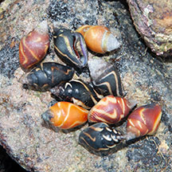
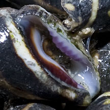
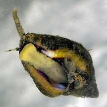
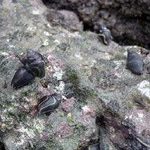

|
|
| shelled snails text index | photo index |
| Phylum Mollusca > Class Gastropoda > Family Columbellidae |
| Lightning
dove snails Pictocolumbella ocellata Family Columbellidae updated Jul 2020 Where seen? This snail with a pretty black-and-white shell is often seen in small groups on many of our Southern rocky shores. They may be found on top and under stones. It was formerly known as Pyrene fulgurans. Features: 1.5-2cm. Shell thick, black with white or yellow zig-zag stripes. Sometimes orange or red ones can be seen among the black ones. The lip of the narrow shell opening is thickened and is often purplish on the inner side. The foot is narrow and strong, and the siphon very long. |
|
 Usually black, but sometimes also red or orange. Pulau Tekukor, Jan 10 |
 Lazarus, Apr 12 |
 Kusu Island, Dec 04 |
| Lightning dove snails on Singapore shores |
On wildsingapore
flickr
|
| Other sightings on Singapore shores |
 Pulau Sudong, Dec 09 Photo shared by Ivan Kwan on flickr. |
Links
References
|